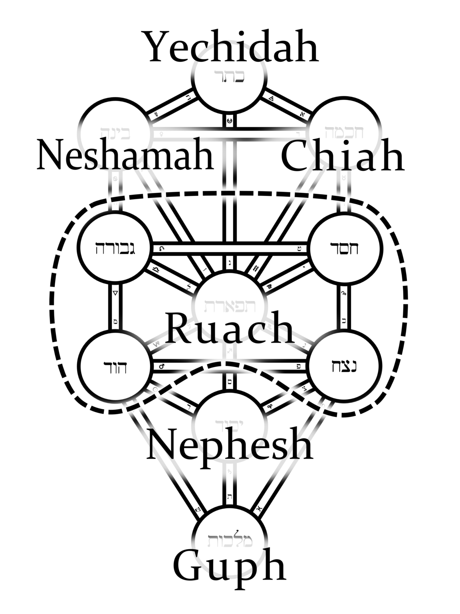
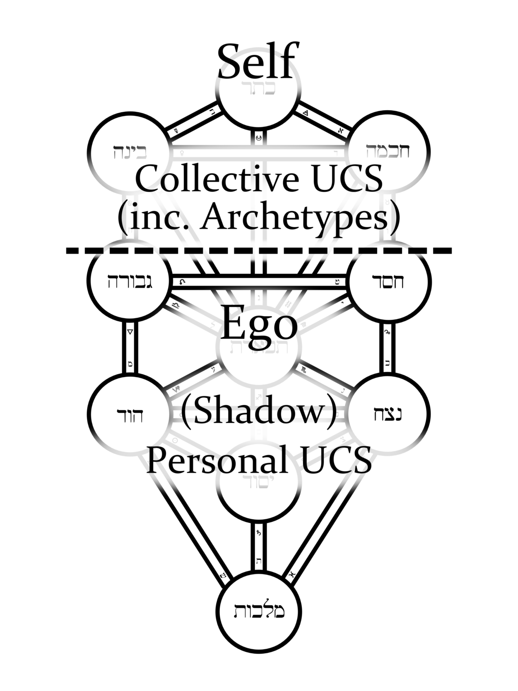

Human Psyche
The Human Psyche is made up of four parts:
- Neshamah
- Ruach
- Nephesh
- Guph


Neshamah, which consists of three parts:
Yechidah (yeh-khee-dah):
- The highest, most spiritual aspect of the psyche.
- This is the essence of Spirit, and is our primary linkage to collective consciousness and universal energies.
- Akin to the Jungian concept of the Self.
- Yechidah resides at Kether, the point from which all creation emanates.
Emerging from Yechidah are the complementary principles of Chiya and Neshamah.
Chiya (khee-ah):
- Life-force and Spiritual Will.
- Assigned to Chokmah.
Neshamah (neh-shah-mah):
- The receptive, intuitive faculty which gives shape and meaning to the chiya life force.
- Assigned to Binah.
- The spiritual intuition, the enlightening and awakening energy that descends from pure spirit to those who are ready to receive it.
Ruach (roo-akh):
- Literally means 'breath', but implies the idea of the vital life force as well.
- Compare this with the Latin spiritus, Greek pneuma, Chinese chi and Sanskrit prana, all of which equate the breath with the life-force
- Ever-flowing and full of life-energy, like the air we breathe.
- Analogous to the Jungian ego in the fullest sense -- the totality of conscious self-awareness.
- Composed of five sephiroth on the Tree of Life, each representing a specific component of human ego-consciousness. Chesed (memory), Geburah (will), Tiphereth (imagination), Netzach (desire/emotion), Hod (intellect).
Shaping the ruach into a fit vessel for the influx of spiritual insight from "above" is the characteristic work of a number of systems of transpersonal psychology as well as many mystical traditions.
Nephesh (neh-fesh):
- Sub-conscious, instinctual drives and energies.
- Assigned to Yesod.
- Jungian personal unconscious, and the Freudian id.
- Is a wellspring of powerful energy, which must be examined, explored, and put to constructive use to avoid blockage, repression, obsession, and illness.
- The ruach must be the master of these energies, and not the other way around
- The vital, instinctual forces of the nephesh must be harnessed to constructive, conscious direction by the ruach, so they may be applied to the work of psycho-spiritual growth and balance
Guph (goof):
- The human body itself.
- Assigned to Malkuth.
- Not accidentally, the guph and the nephesh are adjacent, suggesting their intimately intertwined functions.
There are close connections between the autonomic nervous system, the instincts, the unconscious mind, and the entire human body. To the human being in his or her natural state, these bodily and instinctual aspects of self, and not the ruach, are the most directly receptive to spiritually informed intuitive insights.
Accordingly it is taught within some Qabalistic traditions that our spirit is more immediately and closely tied to our bodies, our instincts and our unconscious minds than to our conscious minds.
It is only when we have progressed on the Way of Return that the link between the conscious ruach and the super-conscious neshamah is solidified.